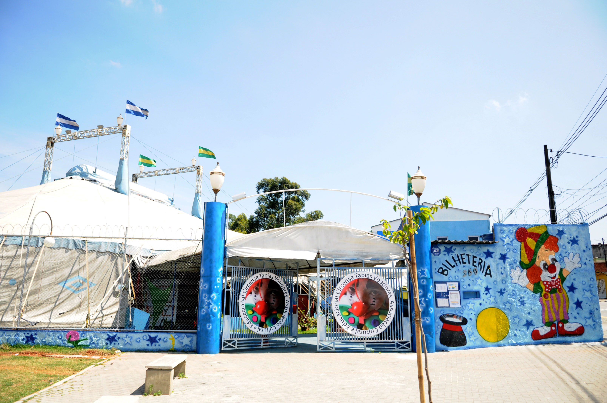
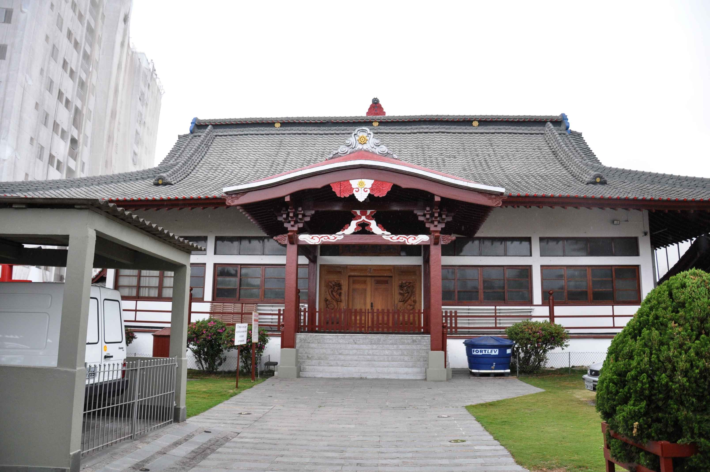
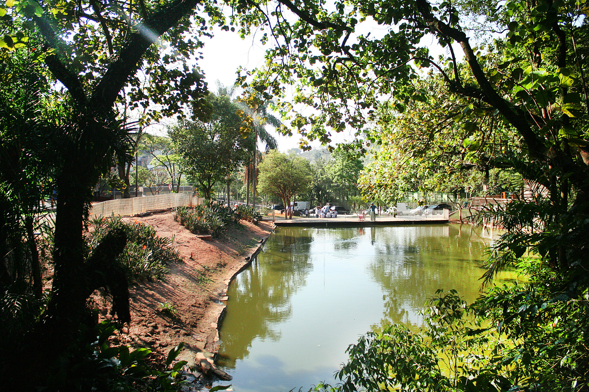

Desde o início, o processo de ocupação de Diadema teve um fator fundamental: sua localização geográfica entre o litoral - Vila de São Vicente - e o planalto - Vila de São Paulo de Piratininga. Foi a existência de uma via de ligação entre São Bernardo e Santo Amaro que proporcionou a chegada de uns poucos moradores ainda no século XVIII. As avenidas Antonio Piranga e Piraporinha originaram-se desses caminhos primitivos.Até a década de 40, a região de Diadema era constituída por quatro povoados pertencentes a São Bernardo: Piraporinha, Eldorado, Taboão e Vila Conceição. Dispersos, eles eram ligados apenas por caminhos precários. Cada um tinha sua vida própria. Piraporinha próximo a São Bernardo; o Taboão, também ligado pela proximidade a São Bernardo e a São Paulo pela Avenida Água Funda.
O Eldorado, que guardava características muito próprias, graças à Represa Billings, vinculava-se mais a São Paulo, à região de Santo Amaro. E finalmente a Vila Conceição formada pelas chácaras pertencentes ao loteamento da Empresa Urbanista Vila Conceição. Em 1925, com a criação da Represa Billings, a região do Eldorado passou a despertar o interesse de moradores da capital que buscavam opções de lazer. Nos anos 30, os irmãos Camargo, donos das terras, resolveram melhorar a ligação com a Vila Conceição (centro) por meio da abertura da atual Avenida Alda até o Parque 7 de Setembro.
O trajeto até o centro foi completado pelo sr. Alberto Simões Moreira. Nessa estrada passaram a transitar carros de boi, cavalos, automóveis e a primeira jardineira que fazia o itinerário Eldorado - Vila Conceição - Praça da Árvore (SP). Apesar da proximidade geográfica com a Capital, até os anos 50 a cidade pouco sentiu os efeitos das transformações produzidas pela industrialização em São Paulo. Até então, Diadema não tinha nenhuma importância econômica regional. Foi nas cidades localizadas ao longo da ferrovia Santos- Jundiaí, principal via de circulação de mercadorias na época, que ocorreu a expansão industrial paulista até a década de 40, especialmente em São Caetano, Santo André e Mauá.
Foi a conjugação de vários fatores que determinou a emancipação político-administrativa de Diadema, como a expansão urbana e industrial paulista em direção ao ABC, a articulação de políticos da localidade, como o professor Evandro Caiaffa Esquível, com lideranças de influência no âmbito estadual, como o jurista Miguel Reale e a intensa participação dos moradores da Vila Conceição na Campanha da Emancipação. Aprovado o processo de emancipação pela Assembléia Legislativa, ocorreu o plebiscito no dia 24/12/1958. As pessoas residentes há mais de dois anos no local votariam a favor ou contra a emancipação. Participaram cerca de 300 eleitores e a emancipação venceu por pequena margem, apenas 36 votos.
Fonte: https://cidades.ibge.gov.br/brasil/sp/diadema
Diadema possui diversos pontos turísticos, locais de visitação turística com relevância cultural e/ou natural, com a possibilidade de contemplação, lugares incríveis para você visitar é o que não falta! Para te ajudar separamos 3 que você precisa conhecer.
Premiado diversas vezes pelo trabalho sociocultural, inclusive pelo Ministério da Cultura, o Circo Escola Diadema é importante parceiro das secretarias municipais de Educação e Cultura. Além de espetáculos circenses para o público em geral, no local são oferecidas aulas de circo para todas as faixas de idade.
A presença de muitas famílias japonesas na história de Diadema fez com que a cidade fosse escolhida para ser a sede de um Templo Budista. O nome da rua onde está localizado o templo, também é uma homenagem ao país do sol nascente: Rua Japão, na região central.
Mais conhecido e frequentado da cidade, o Parque do Paço recebeu este nome porque está localizado ao lado do Paço Municipal de Diadema. Além do lago e muita área verde, o parque oferece pista de caminhada, quadras esportivas, playgrounds, além de aulas de capoeira, zumba, Tai Chi Chuan e tratamentos alternativos de saúde. O principal acesso ao parque é feito pela Avenida Antonio Piranga. O segundo portão, apenas para uso de pedestres, fica na Avenida Sete de Setembro, em frente ao Centro Cultural Okinawa do Brasil.
Fonte: http://www.diadema.sp.gov.br/pontos-turisticos
José de Filippi Júnior (Espírito Santo do Pinhal, 2 de junho de 1957), mais conhecido como Filippi, é um engenheiro e político brasileiro, filiado ao Partido dos Trabalhadores (PT). É o atual prefeito de Diadema, na Região Metropolitana de São Paulo. É formado na Universidade de São Paulo (USP) e Loeb Alumni na Graduate School of Design (Harvard University). Foi prefeito de Diadema por três mandatos: o primeiro entre 1993 e 1996 e dois consecutivos entre 2001 e 2008, deputado estadual de São Paulo entre 1999 e 2000 e deputado federal entre 2011 e 2015.
Presidiu o Consórcio Intermunicipal Grande ABC em 2003. Em 2006, Filippi foi tesoureiro da campanha de reeleição do então presidente Lula[3], cargo especialmente monitorado depois do escândalo do mensalão, também foi tesoureiro da campanha de Dilma Rousseff à Presidência da República em 2010. Foi Secretário Municipal de Saúde na gestão do Prefeito de São Paulo, Fernando Haddad.